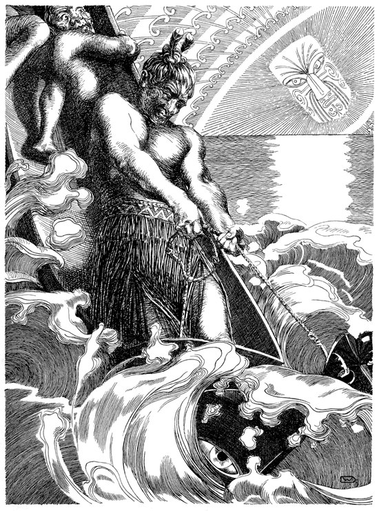

THE FISH-HOOK
He fished up islands with a hook made from his grandmother's jawbone, snared the sun to make the days longer, stole fire for humanity — and died laughing at the joke of it, trying to crawl through the goddess of death to win us immortality; the stories won't let him stay dead, and he wouldn't have it any other way.

THE FISH-HOOK
He fished up islands with a hook made from his grandmother's jawbone, snared the sun to make the days longer, stole fire for humanity — and died laughing at the joke of it, trying to crawl through the goddess of death to win us immortality; the stories won't let him stay dead, and he wouldn't have it any other way.
Feature map
Level-by-level features, as the figure refined them.
Manaiakalani
Bonus action · 1 CE · 1 minute (ends if you are incapacitated).
Tier IV · Snare grapple-controller · suggested CE ability DEX · Primary verb: Haul. Everything can be caught. The Fish-Hook treats snaring as a fundamental operation: a hook set in distance pulls things together, a hook set in time slows the sun, a hook set in a promise catches the promiser. Manaiakalani does not distinguish between a fish, a day, and a vow.
You conjure the great hook — a curved jawbone-barbed hook sized for your hands, counting as a melee weapon you are proficient with (1d8 piercing, reach 10 ft). When you hit a creature with it, you may snag: pull the creature up to 10 ft toward you, or pull yourself up to 10 ft toward the creature. A creature may resist the pull with a successful Strength saving throw against your technique save DC. (The hook does not ask. It catches.)
The Snare Remembers
Action · 2 CE.
You set an invisible hook at a point you can see within 60 ft. The hook persists for 1 hour (you may maintain up to 3). As a bonus action, you may yank one set hook: you teleport to its location — you must have line of effect, though not line of sight. (Distance, banked. The yank, saved for later.)
Slow the Sun
Bonus action · 2 CE.
One creature you can see within 60 ft must succeed on a Strength saving throw against your technique save DC or have its speed halved and lose its reaction until the end of its next turn. (The sun learned to walk. So can you.)
Fish Up an Island
Action · 3 CE.
You haul at the cover itself: choose one creature within 60 ft that is behind total cover relative to you. The cover does not move — the creature does: it is yanked 15 ft toward you to the nearest unoccupied space with line of effect, ending its cover. A successful Strength save against your technique save DC halves the distance (rounded down). (Cover is just water you haven't drained yet.)
Catch the Words
Reaction · 3 CE.
When a creature you can see within 60 ft casts a spell or activates a named technique feature, you snag the utterance: the creature is pulled 15 ft toward you, and it has disadvantage on the spell's attack roll or you have advantage on the saving throw it forces (your choice). You must see the casting to catch the words. (He caught the sun with rope. Words are softer.)
Through the Goddess
Passive · once per long rest.
When you are reduced to 0 hit points, you may instead slip the hook: drop to 1 hit point and teleport up to 30 ft to an unoccupied space you can see, leaving a laughing echo behind. (He has rehearsed dying. He is very good at it by now.)
The Sun, Snared
Action · 8 CE · once per long rest · 1 minute (concentration).
You snare the scene: choose a 30-ft radius sphere centered on a point you can see within 90 ft. For the duration, no creature inside can move more than 15 ft on its turn — or it may exceed the limit by taking 2d10 force damage per 5 ft or fraction thereof beyond the limit (the rope burns; Heaven honors the willing payment — invented clarification). You are unaffected. (The day, slowed. Walk it off, if you can pay.)
Maximum, Domain, or equivalent.
Capstone material.
The Island Comes Up
The full haul: each creature in a 20-ft radius sphere centered on a point you can see within 60 ft must make a Strength saving throw against your technique save DC. On a failure, it takes 6d10 bludgeoning damage and is dragged 20 ft toward the sphere's center; on a success, half damage and no drag. (Everything in the water, all at once, dragged into daylight.)
Te Ika-a-Māui: The Fish of Māui
The ocean floor at the moment of the great catch. Inside this domain, the sure-hit is Everything Is on the Line — at initiative 20, you may pull each hostile creature inside up to 15 ft in any direction. The pull lands (the sure-hit) — but a creature may anchor itself instead, taking 3d10 force damage to refuse the movement until the next initiative 20, a willing-decline valve Heaven honors. Additionally, your Snare Remembers hooks may be set at any point inside the domain as a free action once per round. (Inside the Fish, distance is his to haul.)
- Clash points
- 800
- Burnout
- 5 rounds
- Duration
- 2 minutes
- Radius
- 40-ft radius
- Activation ✦
- full-turn action
- CE cost ✦
- 20
✦ Canon: figure Domains are Specific Domains — the stated profile governs, not the player point-unlock table.
The Second Crawl
You begin what you came back to finish: for 1 minute, you cannot be reduced below 1 hit point by any effect that is not witnessed by Heaven as a binding price (binding-vow backlash, self-inflicted vow costs, and similar still apply — the goddess's terms are the only ones he respects). When the minute ends, you gain one level of exhaustion. (He is practicing. One day the practice ends.)
Build-defining options.
Historical-figure techniques grant no feats — the figure's art is complete as written, and the builder's feat picker excludes these techniques. Take the progression as the build.
Edge cases and shared systems.
Campaign canon notes